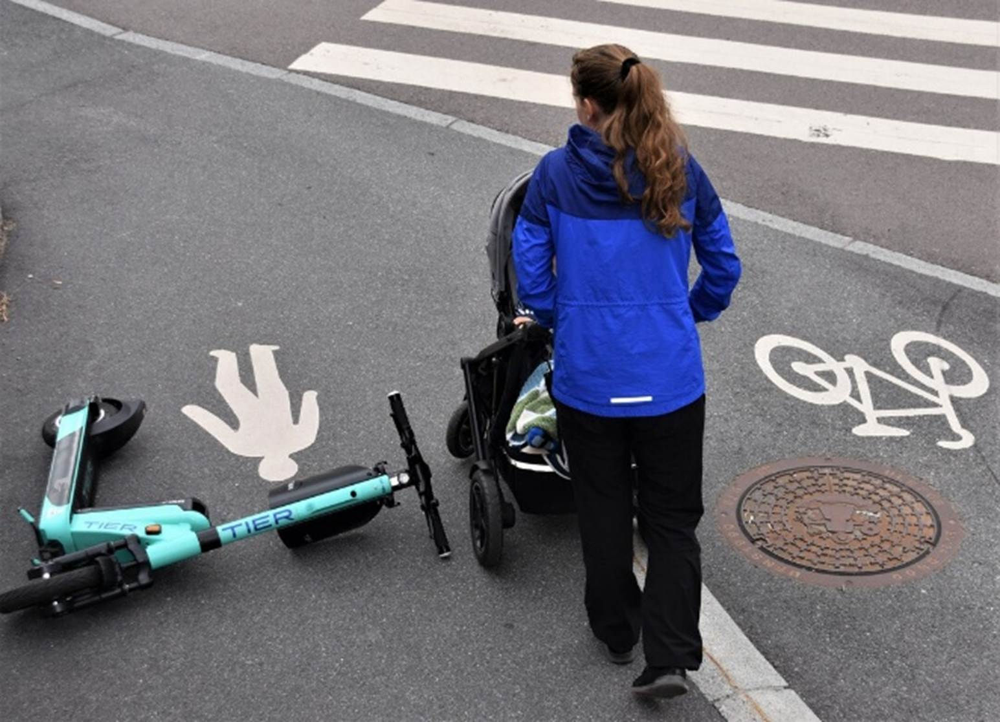
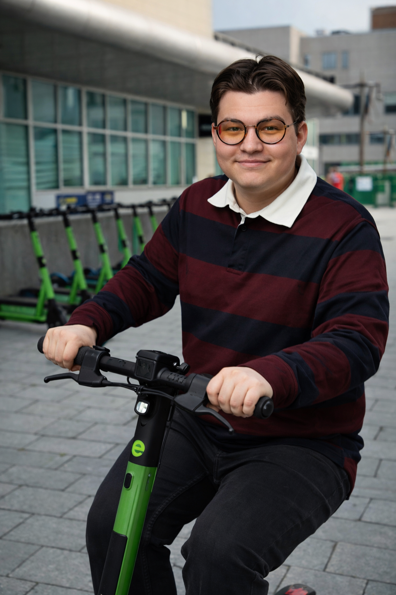
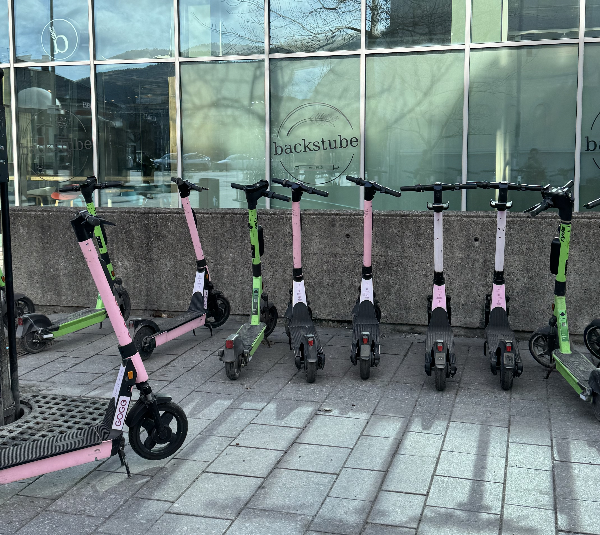

Har du lagt merke til hvor mange el-sparkesykler som ligger rundt i Drammen for tiden?
Langs fortau, ved busstopp og midt i sentrum – de er nesten overalt. For mange unge er el-sparkesykler en enkel og rask måte å komme seg rundt på. Du slipper å vente på buss, og det går ofte raskere enn å gå.
Men ikke alle er like fornøyde.
Skaper problemer i byen

Sparkesykler som blir liggende midt på fortauet skaper hodebry for mange.
Flere reagerer på at sparkesyklene ofte blir parkert feil. Noen ganger ligger de midt på fortauet, noe som gjør det vanskelig å komme seg frem.
Dette kan være ekstra utfordrende for eldre, personer med rullestol eller foreldre med barnevogn. I noen tilfeller kan det også føre til farlige situasjoner hvis folk må gå ut i veien.

– Jeg bruker el-sykkel til skolen nesten hver dag, og det er frustrerende når jeg må svinge unna sparkesykler som ligger i veien, sier en elev i Drammen.
Selv om det ikke var deg som dyttet den på fortauet, kan du være del av løsningen! Ved å parkere sparkesyklene ansvarlig og ordentlig når du bruker dem, bidrar du til å gjøre Drammen en bedre og tryggere by for alle.
Populært blant unge

Mange unge setter pris på friheten el-sparkesykler gir. Samtidig er det ingen tvil om at el-sparkesykler er populære – spesielt blant ungdom.
– Jeg bruker det nesten hver dag. Det er mye raskere enn å gå, sier en elev i Drammen.
For mange handler det om frihet: Du kan dra hvor du vil, når du vil.
Deler meningene

Når mange sykler samles på ett sted, oppleves det ofte som rotete.
El-sparkesykler deler meningene i byen. Noen mener de er en smart og miljøvennlig løsning, mens andre synes de skaper rot og problemer.
Kommunen har regler for parkering, men de blir ikke alltid fulgt.